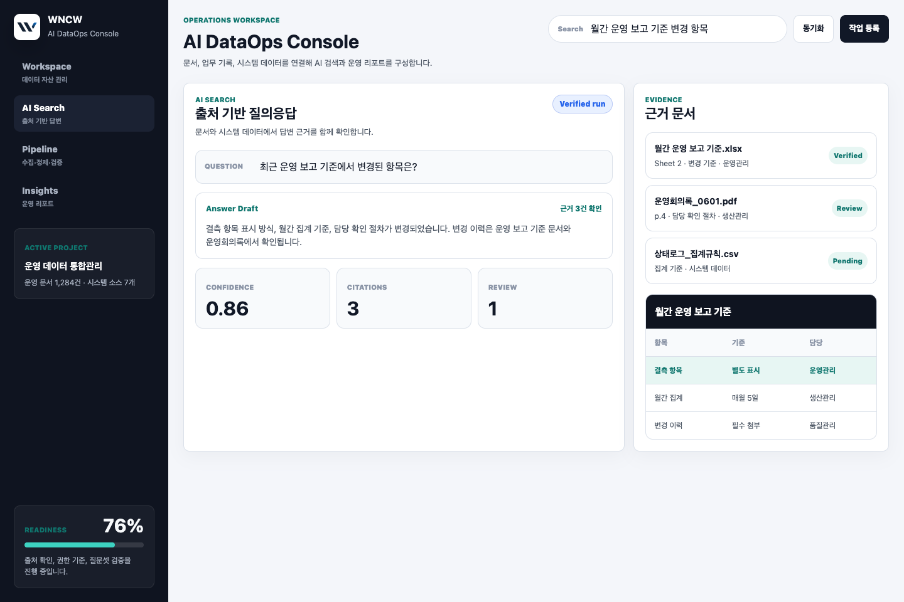
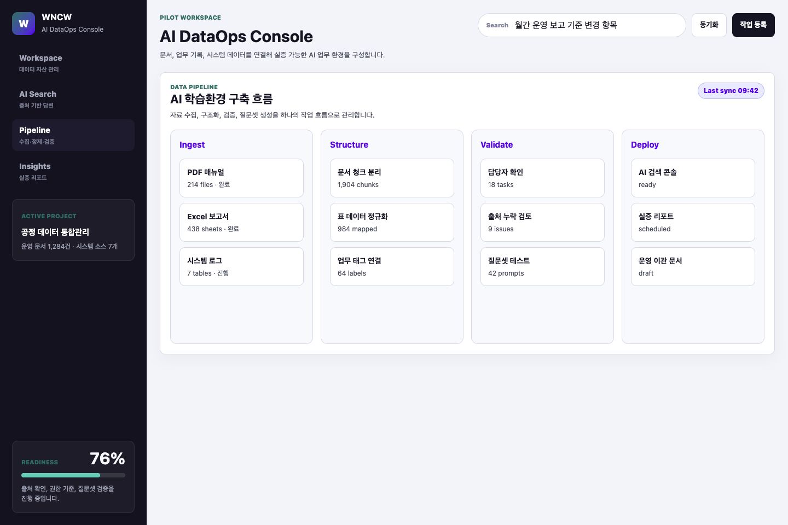
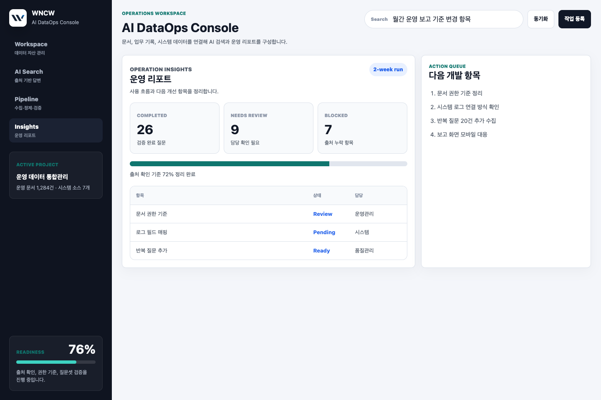

01 · Data Catalog
데이터 자산 관리
문서, Excel, CSV, DB 소스를 업무 단위로 분류하고 연결 상태와 담당 기준을 관리합니다.
Product
데이터 연결, AI 검색, 처리 흐름, 리포트를 하나의 콘솔에서 관리합니다.
문서, Excel, CSV, DB 소스를 업무 단위로 분류하고 연결 상태와 담당 기준을 관리합니다.

답변과 함께 관련 문서, 기준, 출처를 표시해 검토 가능한 검색 경험을 제공합니다.

수집, 파싱, 색인, 검증 상태를 단계별로 확인하고 재처리 이력을 남깁니다.

검색 품질, 누락 데이터, 반복 질문을 리포트로 정리해 개선 우선순위를 확인합니다.
Problem
ERP, MES, 그룹웨어, 개인 문서함에 정보가 나뉘어 필요한 기준을 찾는 시간이 길어집니다.
WNCW는 현장 문서와 운영 데이터를 AI가 참조 가능한 형태로 정리하고, 사용자가 근거를 확인하며 업무에 활용하도록 돕습니다.
부서와 시스템별로 자료가 나뉘어 같은 내용을 반복 확인합니다.
AI 답변만으로는 부족합니다. 최신 문서와 실제 근거가 함께 보여야 합니다.
자주 묻는 질문, 누락 문서, 처리 상태를 추적해야 서비스 품질이 유지됩니다.
Capabilities
작게 시작하더라도 제품 구조는 운영 기준으로 설계합니다. 데이터, 권한, 검색, 리포트가 같은 흐름에서 움직입니다.
문서, Excel, CSV, DB 데이터를 하나의 작업 공간으로 연결합니다.
업무 단위로 문서 내용을 나누고 표 데이터 필드를 정리합니다.
답변 초안과 근거 문서를 함께 보여주는 검색 흐름을 만듭니다.
질문, 답변, 출처, 담당자 검토 이력을 관리합니다.
권한, 담당, 상태, 연결 업무를 관리하는 관리자 화면을 구성합니다.
반복 질문, 누락 데이터, 개선 항목을 정리합니다.
Product Operation
기존 자료를 한 번에 갈아엎지 않고, 우선 연결 가능한 데이터부터 콘솔에 붙여 업무 흐름에 맞춰 확장합니다.
문서함, Excel, CSV, DB 등 접근 가능한 자료를 업무 단위로 연결합니다.
담당자, 최신성, 권한, 문서 유형을 정리해 검색 품질의 기준을 만듭니다.
검색, 출처 확인, 처리 상태, 리포트를 제품 화면에서 관리합니다.
반복 질문과 누락 데이터를 바탕으로 색인과 답변 품질을 개선합니다.
How It Runs
WNCW는 데이터 연결, 사용자 화면, 운영 리포트를 하나의 제품 경험으로 관리합니다.
문서, 표, 시스템 데이터를 업무 단위로 묶고 접근 권한을 정리합니다.
검색 기준, 출처 표시, 처리 상태, 리포트 항목을 콘솔 화면에 맞춥니다.
사용자는 질문하고, 관리자는 데이터 상태와 품질 로그를 확인합니다.
반복 질문, 누락 출처, 낮은 신뢰도 항목을 기반으로 데이터를 보완합니다.
Use Cases
현장 기록, 설비 이력, 품질 문서를 업무 기준으로 연결합니다.
매뉴얼, 규정, 회의록에서 필요한 내용을 근거와 함께 찾습니다.
반복 보고와 요약 자료를 일정한 검증 기준으로 정리합니다.
신규 구성원이 업무 맥락과 판단 기준을 빠르게 확인하게 만듭니다.
Contact
현재 보유한 문서와 시스템 데이터를 기준으로 WNCW 적용 범위와 연결 방식을 검토합니다.
문의 후 데이터 종류, 사용 업무, 필요한 권한 구조를 기준으로 적용 방향을 정리합니다.